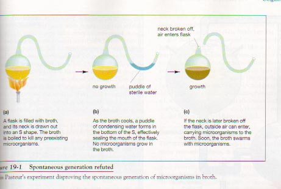
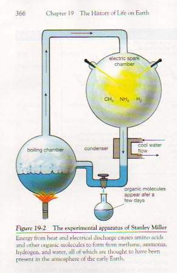

| Feature Article - August 2001 |
| by Do-While Jones |
| 1a: a usu. traditional story of ostensibly historical events that serves to unfold part of the world view of a people or explain a practice, belief or natural phenomenon. |
Biblical creation and the theory of evolution both meet this definition of a myth.
| 1b: PARABLE, ALLEGORY |
We don't consider either Biblical creation or the theory of evolution to be a parable or allegory. This definition isn't relevant. It should be noted, however, that parables and allegories are fictional devices designed to teach truth. Therefore, the term "myth" isn't reserved exclusively for ideas that are false.
| 2a: a popular belief or tradition that has grown up around someone or something ... |
Many people believe in Biblical creation or the theory of evolution, so both beliefs are "popular." Furthermore, both have been taught "traditionally." So, definition 2a could apply equally well to creation or evolution.
| 2b: an unfounded or false notion. |
Since there isn't agreement on whether or not creation or evolution is "unfounded" or "false," this definition isn't particularly useful in our case.
| 3: a person or thing having only imaginary or unverifiable existence. |
The conjunction "or" requires only one of the options to be true. We can probably all agree that neither creation nor evolution is scientifically verifiable, regardless of whether either one is true or not. Therefore, both can be considered myths by this definition.
| 4: the whole body of myths. |
This definition isn't relevant to our discussion.
Combining the relevant definitions, we can say a "creation myth" is "an unverifiable, popular, traditional story of ostensibly historical events that serves to explain the origin of all life on earth." We assert that this definition fits Biblical creation and the theory of evolution equally well. We hope you will agree. Even if you don't agree, we want you to understand that we are using the term "myth" to apply to any story which is passionately believed to be true by a large segment of the population but cannot be scientifically proved to be true. A myth, as we are using the term, is not necessarily false.
| Modern medicine is filled with drugs derived from deadly poisons, from the muscle relaxant curare (taken from South American vines that are used to poison arrow tips) to the anticoagulant Aggrastat (based on the venom of the saw-scaled viper). The potency of these compounds is no accident. After all, each is part of an organism's defense and predatory mechanisms, specifically designed by God. |
The first sentence is factual. The second sentence is merely the author's opinion; therefore it is neither factual nor mythical. All except the last four words of the third sentence are factual. The last four words express an idea believed by many to be true, but cannot be scientifically verified. By our definition above, that makes it a myth. Although some Christians might be a little uncomfortable with the term because of its usual association with Webster's definition 2b (which we have specifically excluded from our definition), we believe most Christians would agree that the statement that poisons were designed by God is grounded in faith rather than experimental data.
You probably passed that last test, so let's try another. See if you can separate fact from myth in the following passage.
| Modern medicine is filled with drugs derived from deadly poisons, from the muscle relaxant curare (taken from South American vines that are used to poison arrow tips) to the anticoagulant Aggrastat (based on the venom of the saw-scaled viper). The potency of these compounds is no accident. After all, each is part of an organism's defense and predatory mechanisms, whose specificity has been honed over millions of years of evolution. 1 |
This time it is the last 11 words of the paragraph that is a myth. Although it has not been scientifically verified that poisons evolved over millions of years, it is believed to be the case by many people. The difference is that evolutionists are not likely to admit that the evolutionary origin of poisons is a myth as we have defined it (that is, even excluding the idea that a myth is necessarily false).
The idea that poisons evolved over millions of years is based on faith rather than scientific data. It isn't rational to think that animals accidentally stored poisons in their bodies for use against enemies without accidentally poisoning themselves. Why would creatures evolve resistance to their own poisons before the poisons evolved? If the poison evolved before they evolved a resistance to it, they would die from their own poison. Poison doesn't make sense from an evolutionary standpoint. No scientist has ever seen a non-poisonous snake evolve into a poisonous one. The only reason for believing that poison evolved is blind faith in the evolutionary myth.
Most Christians are willing to say, "I believe God made some plants and animals poisonous after the Fall by some miracle associated with the curse in Genesis 3:18. I have no scientific evidence that proves it, but I believe it by faith." Few evolutionists are willing to say, "I believe poisonous plants and animals naturally evolved. I have no scientific evidence that proves it, but I believe it by faith." Both believe they know how poisons originated, but (unlike evolutionists) creationists generally recognize the difference between what they believe by faith, and what they know from science.
There may be two reasons why evolutionists won't admit that their belief is based on faith. First, they might not want to admit that they unquestionably believe something that was taught to them without proof. Second, if they admit that evolution is faith-based, then they really have no justification for teaching it in public schools.
Evolutionists make no secret of the fact that they are afraid that if creationists get control of the textbooks, creationists will use the textbooks to indoctrinate students with religious beliefs that evolutionists don't share. We can appreciate that. People tend to expect other people to behave the way they would in a particular situation. Since evolutionists have been using pseudo-science to indoctrinate students with their creation myth, it is reasonable for them to expect creationists to do the same thing if the tables are turned. But it need not be that way. A good science text would say,
| Modern medicine is filled with drugs derived from deadly poisons, from the muscle relaxant curare (taken from South American vines that are used to poison arrow tips) to the anticoagulant Aggrastat (based on the venom of the saw-scaled viper). |
There is no need to speculate about the origin of poisons.
|
We have charged that evolutionary textbooks mix myth and fact in such a way as to indoctrinate students with a particular world view. Here is an example from a 1996 college biology textbook. On the top of page 365 is Figure 19-1 showing "Louis Pasteur's experiment disproving the spontaneous generation of microorganisms in broth." 2
That's real science. Pasteur proved that life only comes from pre-existing life. It cannot arise on its own from a sterilized broth of amino acids, proteins, and DNA. |
 |
Of course, the textbook authors realize that the theory of evolution is dead on arrival. "In the beginning" was a dead planet. Pasteur proved that dead planets remain dead. Therefore they need to find some way to explain the spontaneous generation of the ancestral microorganism that evolved into all the life forms that have ever lived on Earth. Therefore, they have to explain away Louis Pasteur's discovery. They can't let a single page go by without refuting Pasteur's proof that life could not have evolved on a dead planet. So, at the bottom of the very same page, the book says,
|
In 1953, inspired by the ideas of Oparin and Haldane, Stanley Miller, a graduate student, and his advisor Harold Urey of the University of Chicago set out to demonstrate prebiotic evolution in the laboratory. They mixed water, ammonia, hydrogen, and methane in a flask and provided energy with heat and electrical discharge (to simulate lightning). They found that simple organic molecules appeared after just a few days (Fig 19-2). In these and similar experiments, Miller and others have produced amino acids, short proteins, nucleotides, adenosine triphosphate (ATP), and other molecules characteristic of living things. Interestingly, the exact composition of the "atmosphere" used in these experiments is unimportant, provided that hydrogen, carbon, and nitrogen are available, and that free oxygen is excluded. Similarly, a variety of energy sources including ultraviolet light, electrical discharge, and heat all seem about equally effective. Even though geochemists may never know exactly what the primordial atmosphere was like, it is certain that organic molecules were synthesized on the ancient Earth. 3 [emphasis supplied] |
The implication of the last sentence is that these organic molecules, which certainly formed, were somehow responsible for the origin of life. The title of the chapter is "The History of Life on Earth", and the section heading is "Origins." What else is the student expected to believe?
They seem to be hoping that the students have already forgotten what they just learned. Even if Stanley Miller's experiment showed that all the amino acids, proteins, sugars, etc., found in living things today could be produced in high concentrations in water by natural processes, it would not matter because Pasteur's experiment proved that those organic molecules would not come to life.
Furthermore, the biology textbook wasn't entirely honest about Stanley Miller's experiment. Organic molecules did appear after a few days. But only 8 of the 20 required amino acids were produced. So, the textbook should have said that even under Miller's ideal conditions, it was impossible to produce more than half of the amino acids required to support life. The textbook also didn't mention that amino acids come in left-handed and right-handed forms. The proteins in living things are all left-handed. Right-handed amino acids are toxic. Miller's experiment produced both left-handed and right-handed molecules. So, the few organic molecules he produced were floating in a toxic solution.
|
 |
The figure shows that Miller's experiment used a trap to get the organic molecules away from where the action is. Lightening, ultraviolet light, and heat are not very efficient when it comes to building organic molecules. These energy sources are, on the other hand, very good at tearing organic molecules apart. So, for this experiment to simulate conditions on the "early Earth," there would have to be some mechanism that protected the newly formed molecules. There is no evidence that any such mechanism ever existed.
The textbook was honest enough to say that Miller's experiment carefully excluded oxygen. There were two good reasons for this. You can imagine what would have happened to his laboratory if he had put a spark through a mixture of hydrogen and oxygen. Remember the Hindenburg? The second reason is that oxygen would have combined with the organic molecules as quickly as he produced them, immediately destroying them. |
|
The primordial Earth differed greatly from the planet we now enjoy. As rock after rock smashed into the forming planet, their energies of motion were converted into heat. Radioactive atoms decayed, releasing still more heat. Soon the rock melted, and heavier elements such as iron and nickel sank to the center of the mass, where they remain still molten because of intense heat. Gradually, Earth cooled, and elements combined to form compounds of many sorts. Virtually all the oxygen combined with hydrogen to form water, carbon dioxide, and heavier elements to form minerals. After millions of years, Earth cooled enough to allow water to exist as a liquid, and for thousands of years it must have rained, as water vapor condensed out of the cooling atmosphere. As the water struck the surface, it dissolved many minerals, forming a weakly salty ocean. Lightening from storms, heat from volcanoes, and intense ultraviolet light from the sun all poured energy into the young seas. Judging from the chemical composition of the rocks formed at this time, geochemists have deduced that the primitive atmosphere probably contained substances such as carbon dioxide, methane, ammonia, hydrogen, nitrogen, hydrochloric acid, and water vapor. Because oxygen atoms were bound up in water, carbon dioxide, and minerals, there was virtually no free oxygen in the early atmosphere. The absence of free oxygen is an important factor in all hypotheses and experiments dealing with prebiotic evolution. 4 [emphasis supplied] |
The last sentence is the key to their reasoning. It is unquestionably, undeniably, certainly true that life could not evolve in the presence of free oxygen. If you accept the premise that life did evolve, you have to conclude that there was no oxygen present when it evolved.
It is not logically valid to use a conclusion to prove the premise for that conclusion. That is, it isn't logically valid to conclude that life evolved because there was no oxygen after you have concluded that there was no oxygen because life evolved. You need some other evidence (besides the assertion that life evolved) to prove that there was no oxygen on Earth when life evolved.
One must accept by faith that the Earth was much different long ago. One must accept by faith that the Earth was formed by rocks colliding with each other. One must accept by faith that the Earth was once hot enough to melt rock on the surface. Their fable sounds plausible, but it is entirely speculation. The myth tries to establish the idea that the atmosphere was much different than it is now.
The only reason this myth appears in the biology text is to attempt to make Miller's oxygen-less experiment relevant by showing that the experiment accurately simulated the atmospheric conditions on the early Earth. Specifically, the myth must get the students to accept by faith the idea that rocks, water, and carbon dioxide absorbed all the available oxygen, leaving no free oxygen in the atmosphere.
| The composition of our atmosphere near the ground is 78% nitrogen, 21% oxygen, the remaining 1% consisting of other gases, mostly argon. The composition stays the same up to an altitude of at least 70 miles (112 kilometers) (except that higher up two impurities, carbon dioxide and water vapor, are absent), but the pressure drops very fast. 5 |
Our present atmosphere of 21% oxygen certainly isn't the key to a mythical oxygen-free atmosphere that once supposedly existed on Earth.
There is no argument that the Earth has always had lots of water on it. The chemical formula for water is H2O. That means there was one oxygen atom in every single molecule of water on the Earth at the time when life supposedly evolved.
There is no argument that the Earth has always had lots of rocks on it. Many (probably most) of those rocks are granite, or rocks very similar to granite. Granite is made up of quartz, feldspar, and mica. The chemical formula of quartz is SiO2. Feldspar comes in three forms--KAlSi2O8, CaAlSi2O8, and NaAl2Si2O8. Mica comes in several forms, all of which end in O10(OH)2. So, every molecule of quartz contains two oxygen atoms. Every molecule of feldspar contains eight oxygen atoms. Every molecule of mica contains twelve oxygen atoms. The rocks are full of oxygen (but in a form that is very difficult to breathe). Oxygen is one of the most abundant elements in the Earth's crust.
So, for Miller's experiment to be relevant to the origin of life, one has to believe that the Earth once had oceans full of oxygen, rocks full of oxygen, and an atmosphere with absolutely no free oxygen in it. The key word in that sentence is "believe." The assertion that the early atmosphere had no oxygen in it is unverifiable. It is a myth.
Just for the sake of discussion, suppose that the "early Earth" really did have an oxygen-free atmosphere. The evolutionists are still faced with three insurmountable problems.
We have already mentioned the first problem, but we can't resist mentioning it again. Miller and many others over the past fifty years have repeatedly demonstrated that no matter what oxygen-free environment they try, only a few of the necessary building blocks of life will form. Not only that, the energy that creates them destroys them just as quickly. Furthermore, Pasteur proved that even when all the necessary building blocks are present in abundance, life doesn't begin spontaneously. So, many scientific experiments have proved that life could not have originated in an oxygen-free atmosphere.
The second problem is that one has to explain how an oxygen-free atmosphere evolved into an oxygen-rich one. It is a problem evolutionists can't solve. Just 14 days before this newsletter was mailed, Science (the respected journal of the American Association for the Advancement of Science), reported,
|
The rise of atmospheric O2 about 2.4 to 2.2 billion years ago (Ga) changed the course of biological evolution. Yet explaining why O2 rose at that time has remained elusive, given that bacterial oxygenic photosynthesis was present hundreds of millions of years earlier, before 2.7 Ga and possibly since 3.8 to 3.5 Ga.
6 [emphasis supplied]
However, no consensus theory has yet emerged to explain why O2 rose long after oxygenic photosynthesis evolved, and all current hypotheses are problematic. We describe an overlooked biogeochemical mechanism relevant to Earth's redox history: the coupling of early oxygenic photosynthesis to the escape of H to space. H escape provides an alternative to organic burial for removing photosynthetic reductant; H escape is irreversible ... But abundant CH4 implies that hydrogen escapes to space orders of magnitude faster than today. 7 [emphasis supplied] |
Basically, their argument is that water vapor can break down into hydrogen (H) and oxygen (O2). The hydrogen, being very light, escapes from the atmosphere, leaving oxygen. But to get all the oxygen they need, the hydrogen has to escape much faster than it does today, and had to do it for hundreds of millions of years. Again, the present isn't the key to the past!
A review of that article, in the same issue of Science, said,
| On page 839 of this issue, Catling et al. suggest that the transition from low to high O2 was caused by enhanced hydrogen escape into space as a result of high methane concentrations in the Late Archean/Early Proterozoic atmosphere (3000 to 2300 million years ago). ... The escape of hydrogen to space thus results in a net accumulation of oxygen somewhere on the planet. ... This idea appears to have been incorrect. ... Catling et al. have added a couple of new twists to this argument that may help to revive it, albeit in a somewhat different form. ... Catling et al. have explored their hypothesis from a number of different angles and have presented a good case. However, some details of their model remain to be filled in. Perhaps most importantly, how did the oxygen produced by photosynthesis get incorporated into the continents? This could not have occurred by direct oxidative weathering because that is contradicted by the persistence of detrital uraninite and pyrite in Archean sediments. 8 |
So, as recently as two weeks ago, professional scientists who are experts in the field were saying that there are major problems with every explanation as to how the Earth's supposedly oxygen-free atmosphere turned into an oxygen-rich atmosphere.
They are never going to figure out how it happened because it is just like trying to figure out why money doesn't grow on trees any more. The problem, of course, is that money never did grow on trees, so one will never find out why it stopped growing. The atmosphere never was without oxygen. It will be impossible to figure out how an oxygen-free atmosphere turned into the atmosphere we have today because it didn't happen.
One good reason to bury the theory of evolution once and for all is to quit wasting good scientific resources on wild goose chases such as these. Imagine what great discoveries a man as smart as Stanley Miller could have made if he hadn't wasted his entire life trying to figure out how life originated in an atmosphere that never existed.
The third problem is that if life did originate in the methane/ammonia atmosphere, it had to evolve into something that could live in an oxygen-rich atmosphere. A methane-breathing organism had to learn how to breathe oxygen. Evolutionists haven't even presented a plausible explanation of how this might have happened for us to criticize.
Of course, one could easily spend one hour of class time on each of the first four items above. Not a single word needs to be said about creation, God, or the Bible. Just teach the students science. Leave out all the myths. Don't lead students to believe that experiments have shown how the organic molecules that naturally came to life formed on a hypothetical Earth. Tell the students the truth as we have outlined it above. Don't be afraid to teach science just because science is against evolution.
| Quick links to | |
|---|---|
| Science Against Evolution Home Page |
Back issues of Disclosure (our newsletter) |
| Web Site of the Month |
Topical Index |
Footnotes:
1
Dorfman, Time, January 15, 2001, "Potions from Poisons" page 96.
(Ev)
2
Audesirk & Audesirk , Biology 4th Edition, 1996, page 365
(Ev)
3
ibid. pages 365-366
4
ibid. page 365
5
Time Almanac 2001, page 395
6
Science, Catling et al., Vol. 293, 3 August 2001, "Biogenic Methane, Hydrogen Escape, and the Irreversible Oxidation of Early Earth", page 839, https://www.science.org/doi/10.1126/science.1061976
(Ev)
7
ibid.
8
Science, Kasting, Vol. 293, 3 August 2001, "The Rise of Atmospheric Oxygen", page 819, https://www.science.org/doi/10.1126/science.1063811
(Ev)